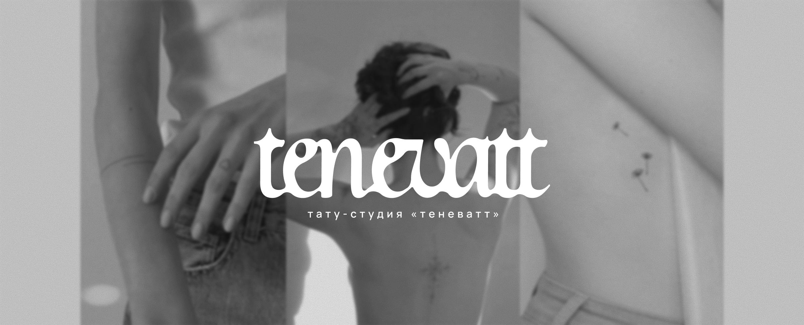
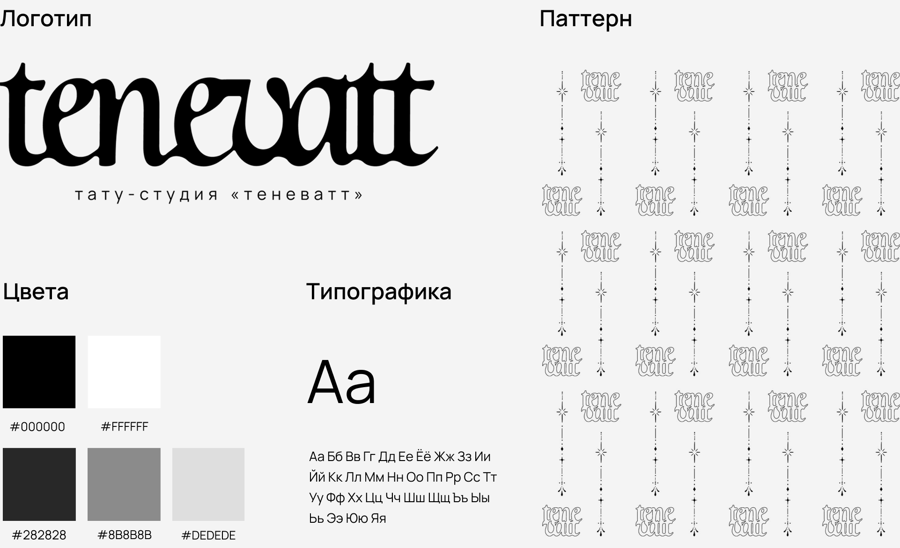
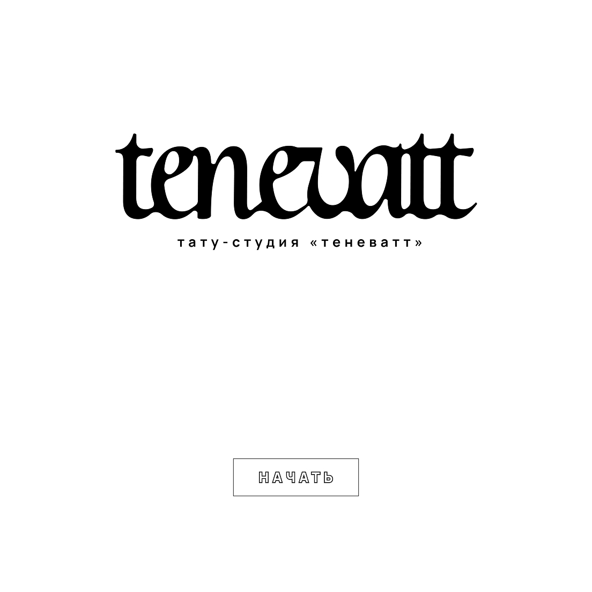
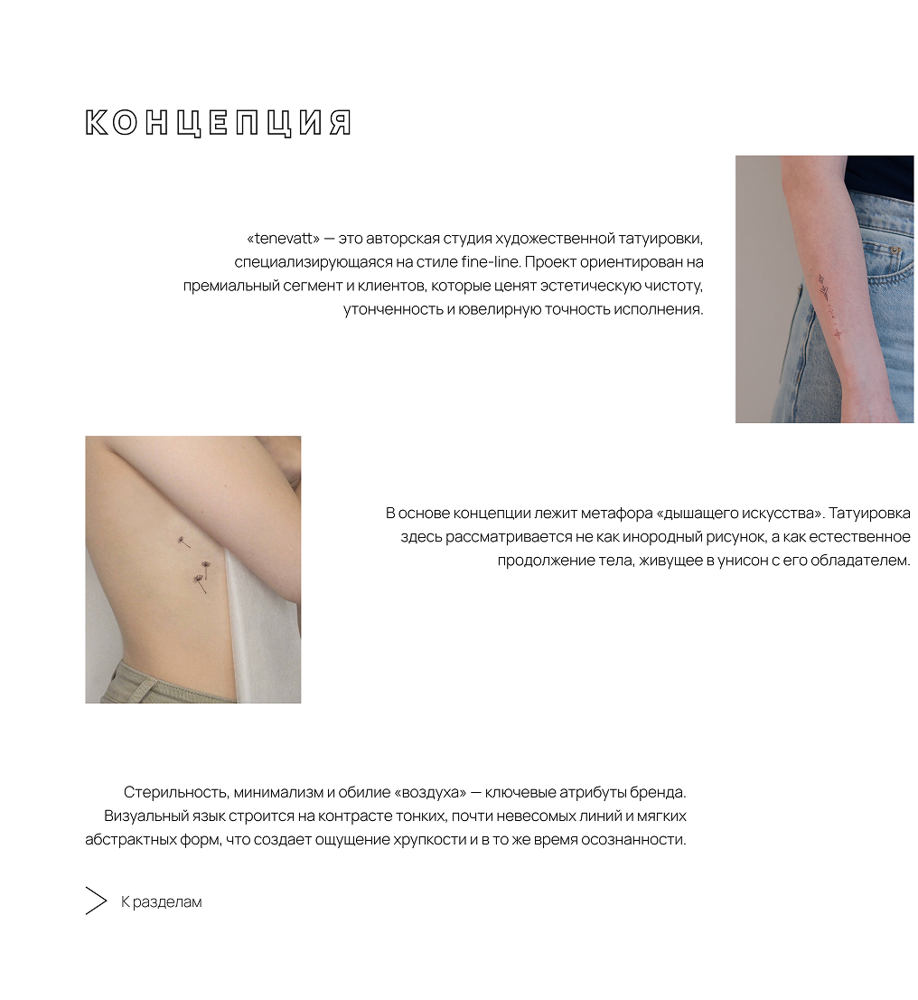
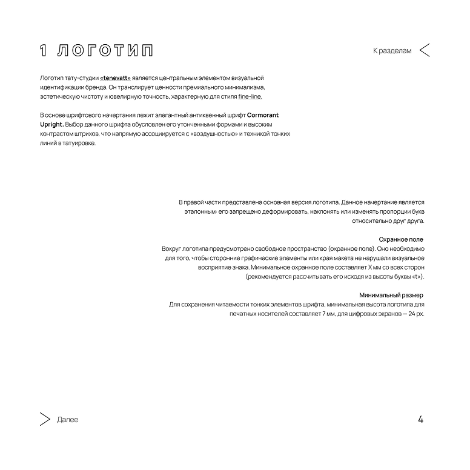
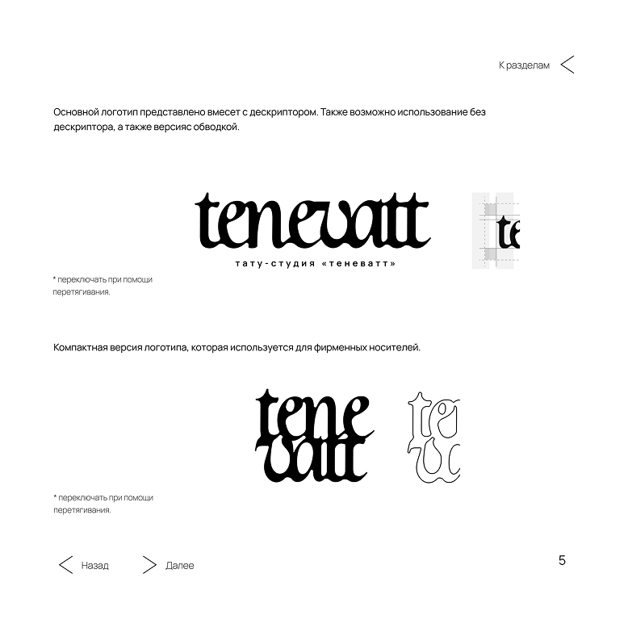
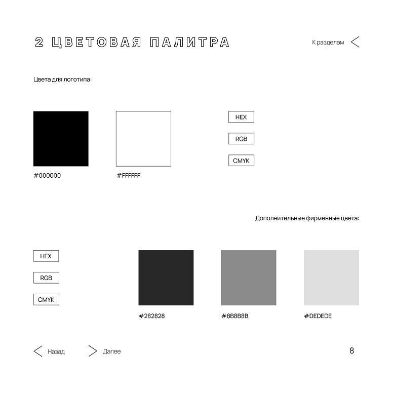
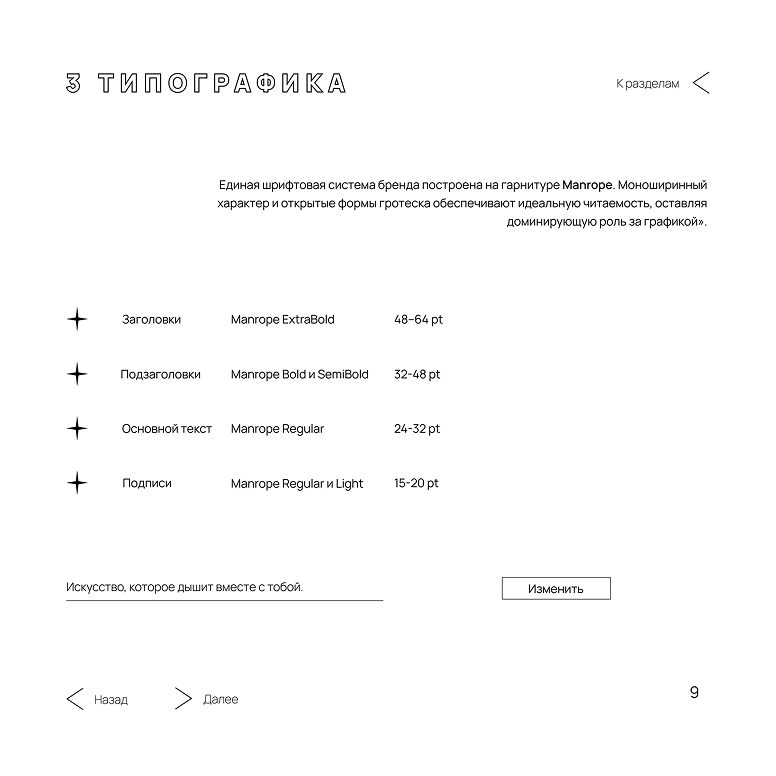
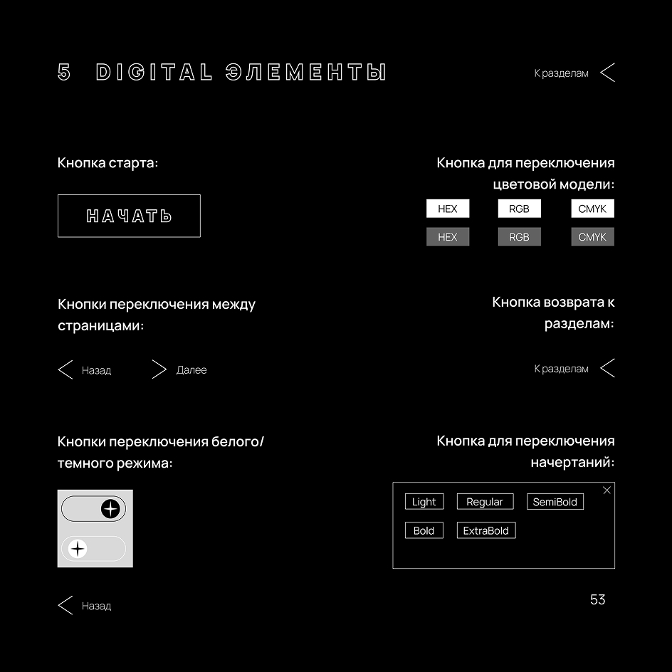
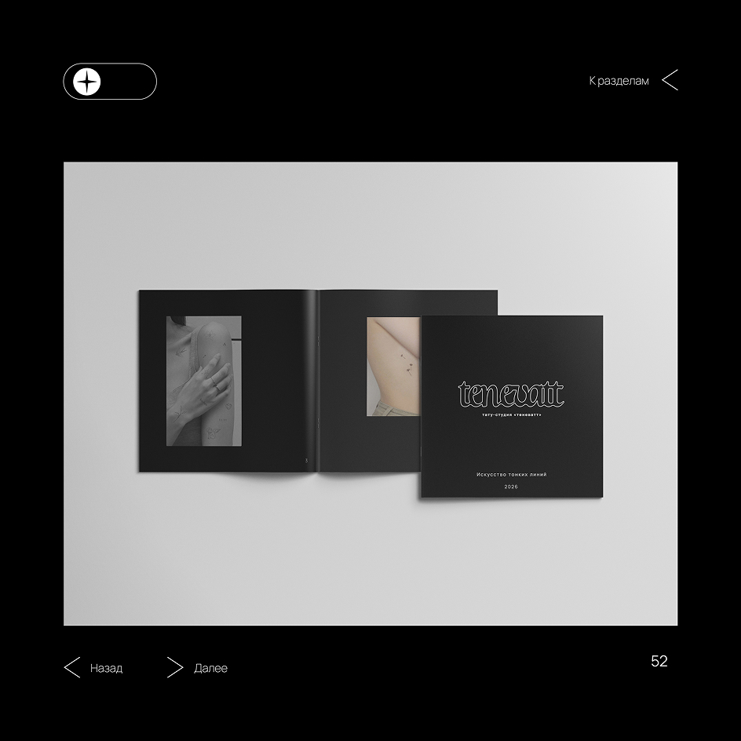

Искусство, которое дышит вместе с тобой.

Искусство, которое дышит вместе с тобой.
tenevatt — это больше, чем студия художественной татуировки. Это пространство, где татуировка рассматривается как естественное продолжение вашего тела.
Мы специализируемся на стиле fine-line: тонких, почти невесомых линиях, которые сохраняют свою четкость и изящество спустя годы.
В tenevatt мы создали атмосферу абсолютной стерильности и визуального спокойствия. Для нас важен не только результат, но и ваш путь к нему.
Мы не просто переносим чернила под кожу. Мы создаем искусство, которое дышит вместе с вами.
Бренд-система tenevatt — набор правил для работы с визуальным стилем концептуальной тату-студии. Она определяет внешний облик наших продуктов, узнаваемость и эмоциональное восприятие бренда в эстетике минимализма.

Концепция tenevatt строится на принципах архитектурной чистоты, ювелирной точности и обилия «воздуха» в макетах. Ниже представлены первые ознакомительные страницы гайдлайна.



На странице представлен первый раздел - логотип, там есть описание создания логотипа, охранного поля и минимального размера. На следующей уже представлен сам логотип, его построение, а также варианты использования. Также логотипы можно листать при помощи перетаскивания.


Далее второй раздел - цветовая палитра. Описание основного черного и дополнительных оттенков серого, а также указание кодов цветов для различных сред с интерактивом. При помощи кнопок hex, rgb, cmyk, код цвета меняется на определенный формат.
Третий раздел - типогрфика. Обоснование выбора шрифта Manrope как единого инструмента для всей текстовой коммуникации.Демонстрация различных начертаний и размеров.
При нажатии на кнопку «изменить», высвечивается окошко с кнопками названия начертаний, и при нажатии на кнопку нужную, надпись с левой стороны меняется на нужное начертание.


Группа страниц, демонстрирующая айдентику на физических объектах: визитках, сертификатах и памятках по уходу
Переход в темный режим, подчеркивающий технологичность и современность бренда. Digital-мокап: Финальный акцент — демонстрация интерфейса или цифрового носителя.


Мы верим, что чистота линий должна соблюдаться во всем: от татуировки на коже до каждой детали нашего бренда. Полная визуальная история проекта собрана в нашем руководстве.
СМОТРЕТЬ ГАЙДЛАЙН Вернуться наверх ↑